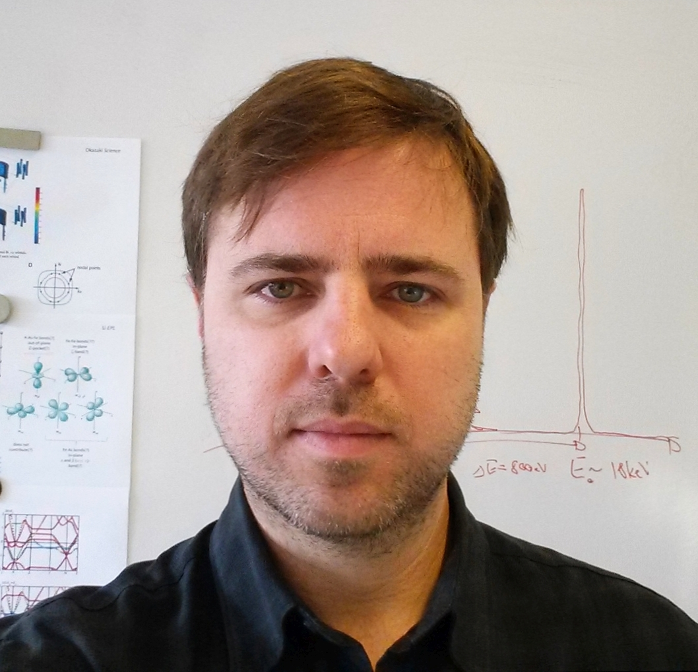

About me
I am an experimental condensed matter physicist, currently working as a University and Project Assistant at the Institute of Solid State Physics at Vienna University of Technology (TU Wien). My research centers on quantum states of matter in strongly correlated electron systems, with a particular focus on topological Kondo insulators and Weyl semimetals. I investigate candidate materials using low temperatures, high pressures, and strong magnetic fields. Since 2019, I have been leading a project funded by the Austrian Science Fund (FWF), exploring the interplay between electronic topology and correlations, and their connection to spin-orbit coupling.
Previously, I was a postdoctoral scientist at the Institute for Quantum Materials and Technologies (IQMT) at the Karlsruhe Institute of Technology (KIT), working within both the New Materials and Thermodynamics group and the Neutron and X-Ray Scattering group. My work there involved studying correlation effects and Pauli-limited multiband superconductivity in iron-based superconductors, as well as probing phonon dynamics in low-dimensional charge-density-wave compounds, and strongly coupled superconductors using inelastic x-ray scattering.
I earned my Ph.D. under the supervision of Prof. M. Brian Maple at the Department of Physics, University of California San Diego (UCSD), where I conducted high-pressure studies on quasi-two-dimensional charge-density-wave rare-earth tritellurides (RTe3) and iron-based superconductors. My interest in extreme conditions research began during my undergraduate studies at the Physics Department of the University of Buenos Aires, where I investigated the effects of uniaxial pressure on vortex dynamics in cuprate high-temperature superconductors.
During a one-year research stay at the National High Magnetic Field Laboratory (NHMFL), Los Alamos National Laboratory (LANL), I developed a strong interest in quantum magnetism. There, I studied compounds such as NiCl2-4SC(NH2)2, which exhibit field-induced Bose-Einstein condensation, and gained hands-on experience in specific heat measurements using a dilution refrigerator under ultra-high magnetic fields.
What is Condensed Matter Physics?
Main areas of research
- Strongly correlated electron systems, quantum phase transitions, heavy fermion compounds, Kondo phenomena, unconventional superconductivity, charge density waves.
- Correlation-driven topological insulators and Weyl semimetals.
- Low temperature physics, high pressures, high magnetic fields, stress/strain dependences, single crystals synthesis and characterization, elastic and inelastic x-ray and neutron scattering.
Education
| 2011 | PhD Physics, University of California San Diego, USA |
| Title: Interplay of Superconductivity, Magnetism, and Density Waves in Rare-Earth Tritellurides and Iron-Based Superconducting Materials | |
| Advisor: Prof. M. Brian Maple | |
| 2006 | MS Physics, University of California San Diego, USA |
| 2003 | MS Physics, University of Buenos Aires, Argentina |
| Title: Influence of Anisotropy in the Dynamical Properties of Vortex Lines in High Temperature Superconductors | |
| Advisor: Prof. Carlos Acha |
Research appointments
| 2017 - present | University and Project Assistant; Project Leader (since 01.2019) |
| Vienna University of Technology (TU Wien), Austria | |
| Institute of Solid State Physics, Quantum Materials group | |
| 2011 - 2016 | Postdoctoral Researcher, Karlsruhe Institute of Technology, Germany |
| IQMT New Materials and Thermodynamics group, and Neutron Scattering group | |
| 2006 - 2011 | Research Assistant, University of California San Diego, USA |
| 2004 - 2005 | Research Assistant, Los Alamos National Laboratory, USA |
| National High Magnetic Field Laboratory (MPA-NHMFL) | |
| 2002 - 2004 | Research Assistant, Physics Department, University of Buenos Aires, Argentina |
Teaching appointments
| 2017 - 2023 | University Assistant, Vienna University of Technology (TU Wien), Austria |
| 2014 | Teaching Assistant, Karlsruhe Institute of Technology, Germany |
| 2005 - 2007 | Teaching Assistant, University of California San Diego, USA |
| 2001 - 2004 | Teaching Assistant/Lecturer, University of Buenos Aires, Argentina |
Curriculum Vitae
© 2025 Diego Zocco